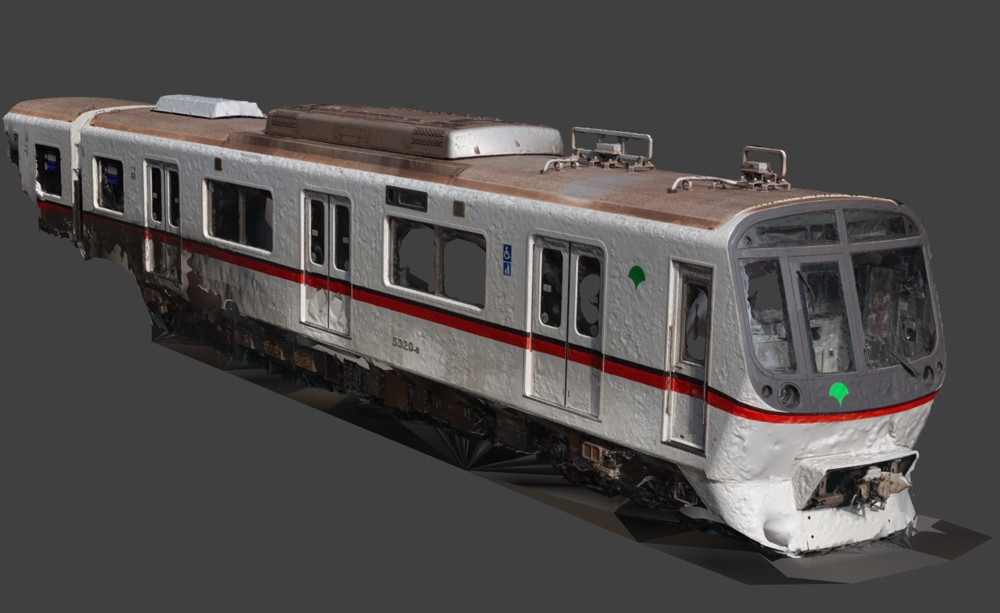

5300形
5320F
資料画像
(Google Driveのプレビューが遅いのでダウンロード推奨)
床下機器(海,山側) (CC BY-SA 4.0)
屋根上 (CC BY-SA 4.0)
フォトグラメトリ
(8号車) 先頭車両 海側外装 (ライセンスは同封したtxtファイルにあります)
撮影日:2023-06-16
3Dスキャンデータ

(1号車) 先頭車両 外装 (CC BY-SA 4.0)
撮影日:2022-06-20

(8号車) 運転台 (CC BY-SA 4.0)
撮影日:2022-08-31